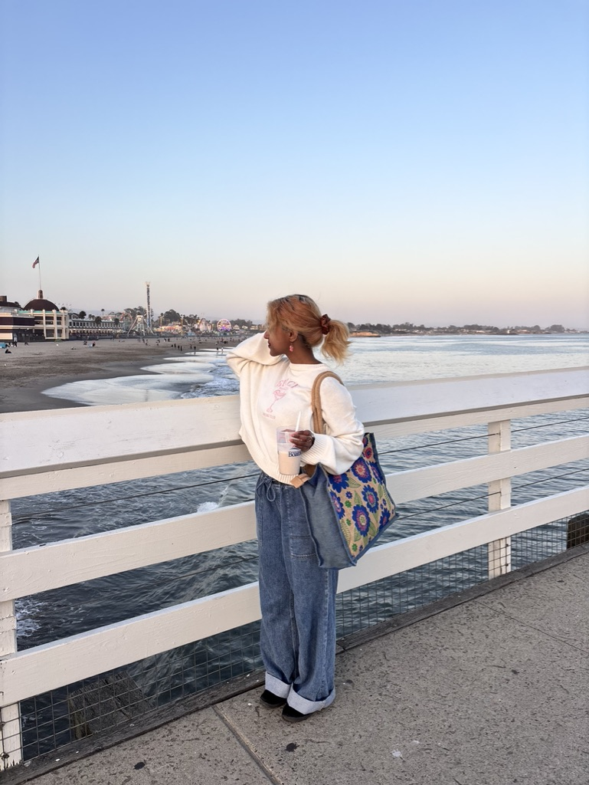

About Me 🌸

Sanjana Ganesh
Notes:
Hi! I'm Sanjana, but you can call me Sanju. I'm currently a Communication Studies student at San José State University, double minoring in Journalism and Digital Media Art. I strive to combine all of my academic knowledge to promote the ethical use of technology in storytelling. This journal is a collection of some of my favorite interactive projects.